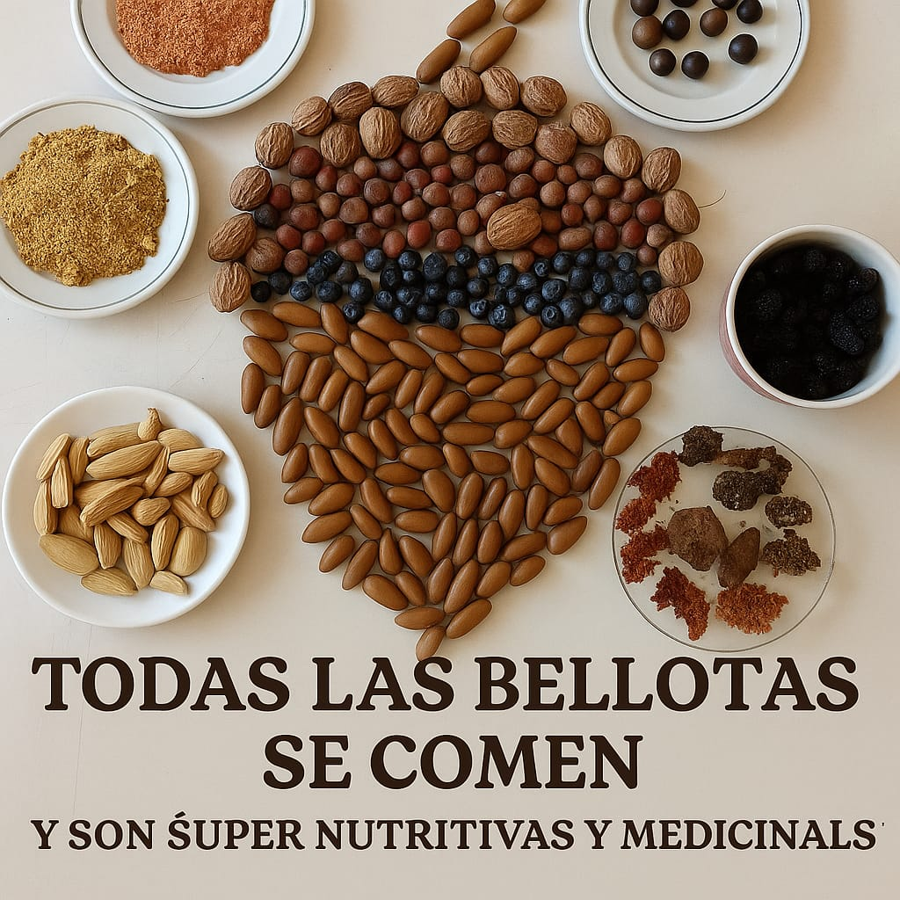

Proyecto Saberes del Territorio
Memoria alimentaria y cocina tradicional
Recolección y aprovechamiento tradicional de frutos del territorio
29 plazas disponibles
7 noviembre 2026
Montánchez
Hora de encuentro: 9:30
Punto de encuentro: inicio de la Ruta del Castañar de Montánchez
Imparte: Miguel Ángel Llorente
Montánchez
Hora de encuentro: 9:30
Punto de encuentro: inicio de la Ruta del Castañar de Montánchez
Imparte: Miguel Ángel Llorente
Una jornada práctica dedicada a recuperar saberes alimentarios vinculados a los frutos del territorio, con especial atención a la bellota y la castaña, su recolección, conservación, transformación y uso cotidiano.
El taller abordará bellotas dulces y amargas, castañas y otros frutos del territorio, y mostrará distintos procedimientos tradicionales y actuales de procesado, fermentación, desamargado y conservación, combinando explicación, elaboración y degustación.
Contenidos del taller
- Reconocimiento y selección de bellotas y otros frutos del territorio.
- Usos alimentarios tradicionales y posibilidades contemporáneas.
- Técnicas de recogida, secado, conservación y desamargado.
- Preparaciones básicas y cocina tradicional al fuego.
- Intercambio de conocimientos, memoria local y degustación.
Imagen · Miguel Ángel Llorente
